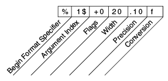

Los objetos de flujo que implementan formateao son instancias o de
PrintWriter, un clase de flujos de caracteres, o
PrintStream, una clase de flujos de bytes.
PrintStream que usted probablemente necesite son
System.out y
System.err. (Vea E/S desde la Línea de Comandos para saber más sobre
estos objetos). Cuando necesite crear un flujo de salida formateaddo, instancie PrintWriter, no
PrintStream.
Como todos los objetos de flujo de caracteres y bytes, las instancias de PrintStream y
PrintWriter implementan un conjunto estándar de métodos write para la salida simple
de bytes y caracteres. Además, ambos PrintStream y PrintWriter implementan el mismo
conjunto de métodos para convertir los datos internos en salida formateada. Se ofrecen dos niveles de
formateado:
print y println formatean valores individuales de un forma estándar.
format formatea casi cualquier número de valores basándose en una cadena de formato, con muchas
opciones para el formateado preciso.
print y println
Invocar print o println visualiza un valor simple después de convertir el valor usando
el método toString apropiado. Podemos ver esto en el ejemplo
RaizCuadrada :
public class RaizCuadrada {
public static void main(String[] args) {
int i = 2;
double r = Math.sqrt(i);
System.out.print("La raíz cuadrada de ");
System.out.print(i);
System.out.print(" es ");
System.out.print(r);
System.out.println(".");
i = 5;
r = Math.sqrt(i);
System.out.println("La raíz cuadrada de " + i + " es " + r + ".");
}
}
Aquí está la salida de RaizCuadrada:
La raíz cuadrada de 2 es 1.4142135623730951.
La raíz cuadrada de 5 es 2.23606797749979.
Las variables i y r son formateadas dos veces: la primera vez usando código en una
sobrecarga de print, la segunda vez por el código de conversión automáticamente generado por el
compilador de Java, el cual utiliza también toString. Puede formatear cualquier valor de esta
forma, pero no tiene mucho control sobre los resultados.
format
El método format formatea múltiples argumentos basados en una cadena de formato. La cadena
de formato consiste de un texto estático embebido con especificadores de formato; excepto por los
especificadores de formato, el formato de la cadena es visualizada sin cambios.
Las cadenas de formato soportan muchas características. En este tutorial, sólo cubriremos algunos conceptos
básicos. Para una completa descripción, vea la
sintaxis de la cadena de formato en la especificación del IPA.
El ejemplo
RaizCuadrada2 formatea dos valores con una única invocación a format:
public class RaizCuadrada2 {
public static void main(String[] args) {
int i = 2;
double r = Math.sqrt(i);
System.out.format("La raíz cuadrada de %d es %f.%n", i, r);
}
}
Aquí está la salida:
La raíz cuadrada de 2 es 1,414214.
Como los tres usados en este ejemplo, todos los especificadores de formato empiezan con un % y
terminan con un 1- o 2-caracteres de conversión que especifican la clases de salida formateada que va
a ser generada. Las tres conversiones usadas aquí son:
d formatea un valor entero an como un valor decimal.f formatea una valor de coma flotante como un valor decimal.n da salida a un terminador de línea específico de la plataforma.Aquí tiene algunas otras conversiones:
x formatea un entero como un valor hexadecimal.s formatea cualquier valor como una cadena.tB formatea un entero como un nombre de mes específico de la localización regional.Hay muchas otras conversiones.
Excepto para %% y %n, todos los especificadores de
formato deben coincidir con un argumento. Si no lo hacen, se lanza una excepción.
En el lenguaje de programación Java, la secuencia de escape \n siempre genera el caracter de
retorno de línea (\u000A). No use \n a menos que usted específicamente quiera
un caracter de retorno de línea. Para obtener el separador de línea correcto para la plataforma loca, use
%n.
Además de la conversión, un especificador de formato puede contener elementos adicionales que personalizan más
la salida formateada. Aquí tiene un ejemplo,
Formato, que usa cada posible clase de elemento.
public class Formato {
public static void main(String[] args) {
System.out.format("%f, %1$+020.10f %n", Math.PI);
}
}
Aquí está la salida:
3,141593, +00000003,1415926536
Los elementos adicionales son todos opcionales. La siguiente figura muestra cómo el especificador más largo se descompone en elementos.

Elementos de un Especificador de Formato
Los elementos deben aparecer en el orden mostrado. Empezando desde la derecha, los elementos opcionales son:
s y otras conversiones generales, este es el máximo tamaño del valor formateado; el valor
es truncado-por-la-derecha si es necesario.
Formato, la
bandera + especifica que el número será formateado siempre con un signo, y la bandera
0 especifica que 0 es el carácter de relleno. Otras banderas incluyen
- (rellena por la derecha) y , (formatea el número con separadores decimales
específicos de la localización regional). Note que algunas banderas no pueden ser usadas con otras ciertas
banderas o con ciertas conversiones.
< para hacer coincidir el mismo argumento con el especificador previo.
Así el ejemplo podría haber dicho:
System.out.format("%f, %<+020.10f %n", Math.PI);